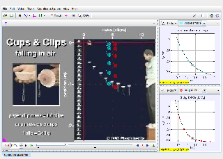

Tracker Experiment
This video shows a set of cupcake cups dropped from rest. The cups have paper clips attached to give them mass and stability.
Here dynamic particle model tracks are used to compare two different air resistance models with the mass 5 cup (seen in the video between the two models). The blue model assumes air resistance is a viscous force (depends linearly on v), while the red model assumes it is a drag force (depends on v2).
Analysis:
- Right-click the blue viscous model, choose "Model Builder" and study the force functions. What forces act on the particle and in what directions?
- Identify and name the parameters in the model. Which one(s) affect the viscous force? Select one of these to adjust.
- Double-click the expression cell for your parameter and adjust the value by entering directly or dragging the mouse in the green area of the editor. How closely can you get the model to match the real cup's position in every step? Zoom in to compare closely.
- Repeat 1 - 3 for the drag model.
- Can you say with confidence which model best matches the motion of the cup?
Author: Douglas Brown
Contact: dobrown@cabrillo.edu